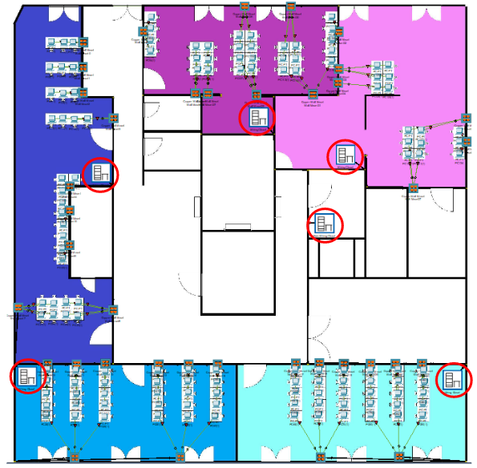

1. Elección de topologías de red
A la hora de implementar la red para el plano del proyecto, después de informarnos sobre las ventajas y desventajas de cada una, hemos escogido para la infraestructura las siguientes topologías, que es la mixta, en la que estará compuesta por:
- Árbol
- Estrella
2. ¿Por qué hemos elegido estas topologías?
Hemos elegido estas topologías, ya que creemos que son las más aptas, eficientes y económicas. A continuación, veremos las ventajas de las topologías que hemos escogido.
MIXTA
- Estas topologías son flexibles, confiables y tienen mayor tolerancia a fallas
- El grado de flexibilidad que proporciona, ya que hay pocas limitaciones en la estructura de una red como tal que una configuración mixta no pueda adaptar
- Si un ordenador falla, entonces es detectado por el hub al que está conectado y simplemente lo aísla del resto de la red
ÁRBOL
- Proporciona una disposición de datos jerárquica y central de los nodos
- Como los nodos hoja pueden agregar uno o más nodos en la string jerárquica, esta topología proporciona una alta escalabilidad
- Los otros nodos de una red no se ven afectados si uno de sus nodos se daña o no funciona
- Un fácil mantenimiento y se puede realizar una fácil identificación de fallas
ESTRELLA
- Si un nodo o su conexión se rompe, no afecta a las otras computadoras ni a sus conexiones
- Los dispositivos se pueden agregar o quitar sin perturbar la red
- Funciona bien bajo carga pesada
- Apropiado para una gran red
3. ¿Cómo lo distribuiremos?
Tenemos varios switches, cada uno transmitiendo datos a una red en estrella desde una en árbol, en la que un dispositivo recibe las señales de datos de todos los equipos y las transmite a través de los distintos puertos.
Distribuiremos todo de la siguiente manera. Primero en la sala de servidores ubicamos el rack principal en el que tendremos el router, el servidor, y un switch, desde el cual, llevaremos los cables a través de canaletas hasta todos los racks, que hemos ubicado uno por aula, en estos, tendremos 2 switches y un access point, menos en el aula 1.1, que en vez de poner 2 switches pondremos solo uno, ya que no es necesario poner más, conjunto a el access point, después a través de canaletas llevaremos el cable hasta las rosetas correspondientes.